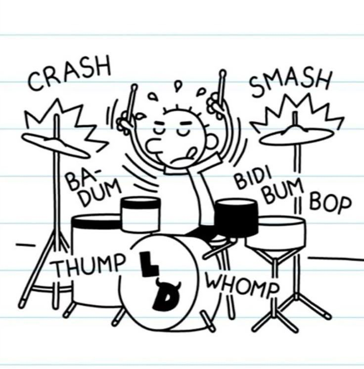
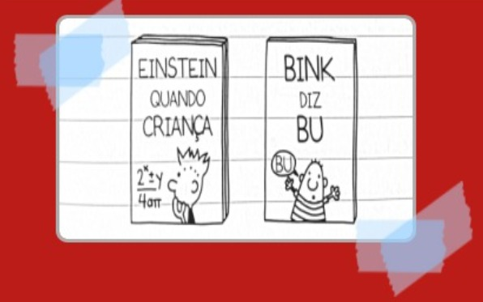
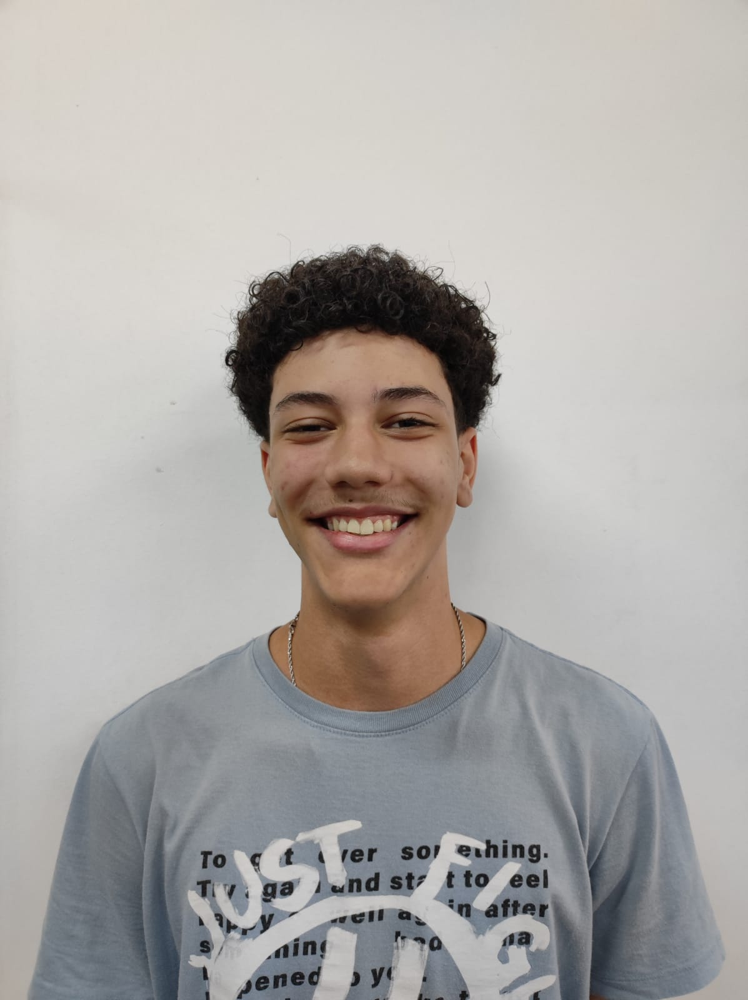
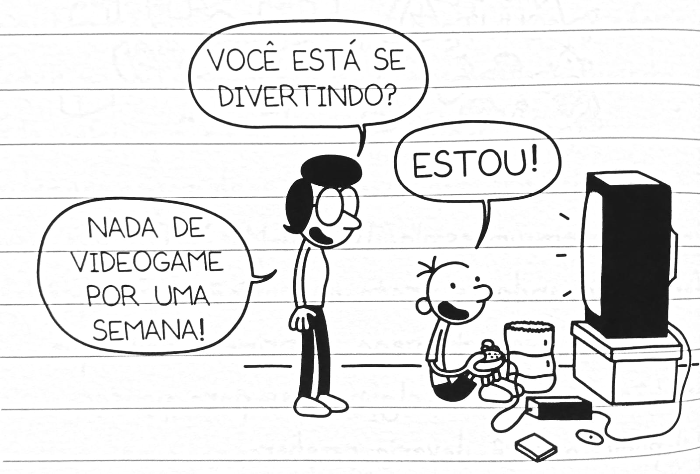
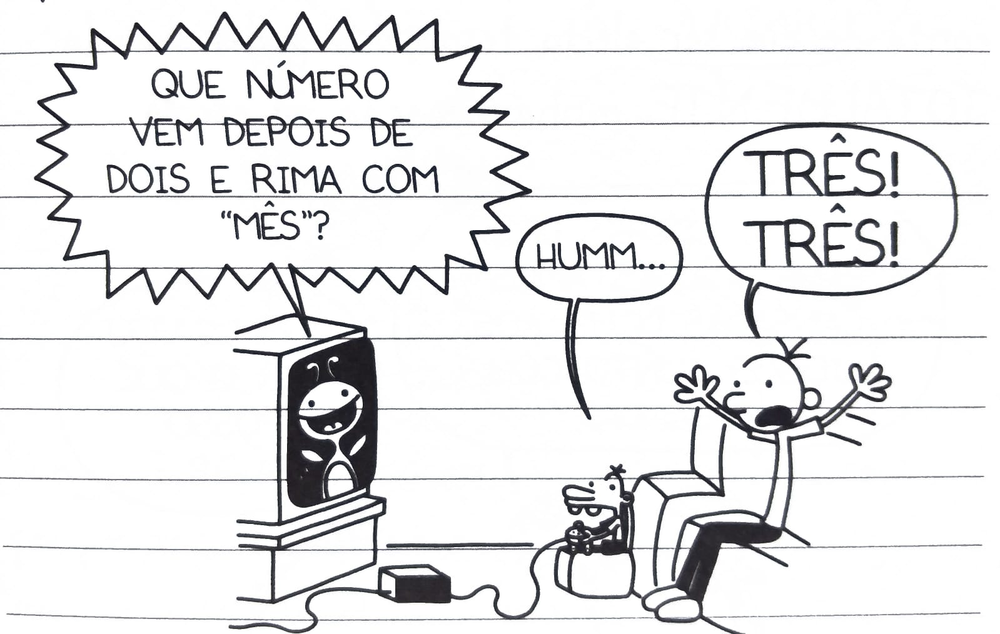

Desde a infância, sempre mantive contato com a leitura, iniciando por meio de gibis e livros infantis
curtos. No entanto, foi aos 11 anos que esse hábito ganhou força, pois foi quando comecei a ler
Diário de um Banana.
A partir desse momento, passei a desenvolver um interesse maior pela leitura.
Mesmo atualmente, continuo acompanhando e adquirindo novos lançamentos da série, que além de me
proporcionar entretenimento, desperta um forte sentimento de nostalgia.
Dessa forma, reconheço que esse
momento específico representou um ponto de partida fundamental para o aprofundamento do meu interesse pela
leitura ao longo dos anos.

Sexta-feira
Hoje a gente foi dividido em grupos de leitura na escola.
Eles não chegam a dizer se você está no grupo Avançado ou no Fácil, mas dá para saber de cara pela capa
dos
livros que eles distribuem.


Em todo o lugar!
A série virou um fenômeno mundial.
Hoje já ultrapassou 300 milhões de cópias vendidas e foi traduzida para mais de 70 idiomas.
É uma das séries de livros mais vendidas do mundo
Jeff Kinney não começou como autor!
O autor da série, Jeff Kinney, não começou a carreira como escritor de livros.
Antes do sucesso da série, ele trabalhou com design de jogos e software, e a ideia inicial era até criar
uma tirinha/cartum.
Isso explica bastante o estilo visual da obra.
A série chegou ao 20º livro!
Uma das maiores curiosidades sobre Diário de um Banana é que a série não perdeu força com o tempo.
O primeiro livro foi lançado em 2007, e mesmo depois de tantos anos, Jeff Kinney continuou lançando novos
volumes quase todos os anos.
Em 2025, a série chegou ao 20º livro, um marco enorme para qualquer saga literária.
O mais legal é que os livros não ficaram famosos só entre quem lia quando criança.
Muitos leitores que começaram com os primeiros volumes e cresceram acompanhando a série.
Quinta-feira
A mamãe tem um estilo TOTALMENTE diferente quando se trata de punições. Se você faz besteira, a primeira
coisa que a mamãe faz é tirar alguns dias para pensar qual punição você deveria receber.
Mas aí, depois de alguns dias, bem quando VOCÊ esquece que vai se dar mal, ela vem e diz o que é.

Sábado
Ainda estou proibido de jogar, então o Manny tem usado meu videogame.
A mamãe foi e comprou um monte de jogos educacionais, e olhar ele jogar é que nem tortura.
